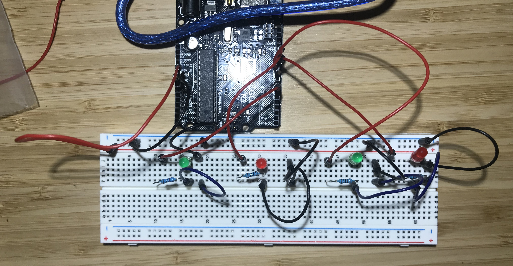
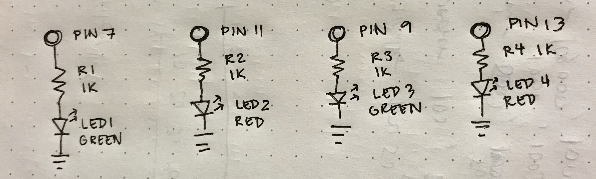

Reine Abubakar's Assignment 1
Code Snippet
// the setup function runs once when you press reset or power the board
void setup() {
// initialize digital pin LED_BUILTIN as an output.
pinMode(7, OUTPUT); // initialize Pin 7 as an output
pinMode(9, OUTPUT); // initialize Pin 9 as an output
pinMode(11, OUTPUT); // initialize Pin 11 as an output
pinMode(13, OUTPUT); // initialize Pin 13 as an output
}
// the loop function runs over and over again forever
void loop() {
// green LED are assigned to Pins 7 and 9 and should blink in succession one time each
for (int greenPin = 7; greenPin < 10; greenPin +=2){
digitalWrite(greenPin, HIGH); // a green LED lights up as it's connected to the Pin
delay(500); // a half-second delay
digitalWrite(greenPin,LOW); // a green LED turns off as it's connected to the Pin
}
// red pins are assigned to Pins 11 and 13 and should blink two times each
for (int redPin = 11; redPin < 14; redPin +=2){
digitalWrite(redPin,HIGH); // a red LED lights up as it's connected to the Pin
delay(300); // a 300ms delay
digitalWrite(redPin,LOW); // a red LED turns off as it's connected to the Pin
delay(300); // a 300ms delay
digitalWrite(redPin,HIGH); // the same red LED lights up as it's connected to the Pin
delay(300); // a 300ms delay
digitalWrite(redPin,LOW); // the same red LED turns off as it's connected to the Pin
}
}
Circuit
The circuit is composed of four LED lights: two green and two red that are connected to Pins 7, 9, 11, and 13 respectively.
Schematic
For red and green LEDs, there is a 1.8V drop and a 20mA desired current.
V = 5V - 1.8V = 3.2V
V = I X R
3.2V = 0.02A x R
R = 3.2V / 0.02A
R = 160 ohms
For the ideal current of 20mA, the resistor should be 160 ohms. In the available kit, resistors of 220 and 330 ohms would suffice, but I chose 1K as it allows the LED to shine brightly enough and is a safe value to make sure that the LED does not burn out.
Circuit Operation

Green LEDs are programmed to blink once, while red LEDs blink twice in succession. This makes for an interesting pattern.